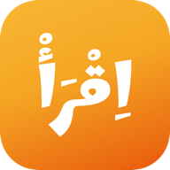
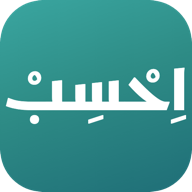
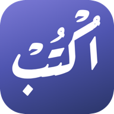

مساران: مسارُ العربية والقرآن — اقرأ واكتب جذعاً، ثم اتقن للعربية
المتقدمة، ورتل واحفظ للقرآن — ومسارُ المهارات (احسب والإنكليزية).
ولكل تطبيقٍ حيٍّ صفحتُه التعريفية المفصّلة.

اِقْرَأْ
حيٌّ الآن
يعلّم قراءةَ العربية من الحرف الأول إلى قراءة القرآن — على أساس
القاعدة النورانية، بترتيب الحروف على كثرة استعمالها، وكلماتٍ من
عالم الطفل. ولا يُعرَض على الطفل حرفٌ أو علامةٌ لم يتعلمها بعد —
يفرض ذلك فاحصٌ آليّ على المحتوى كلِّه.
صفحتُه التعريفية ←

اِحْسِبْ
حيٌّ الآن
الحسُّ العددي قبل الرمز: يبدأ الطفلُ بإدراك الكمّ والعدّ باللمس،
ثم يقرأ الأرقامَ ويقارن، ثم يركّب الأعداد ويفكّها، فيبلغ الجمعَ
والطرح ضمن العشرين — كلُّ عددٍ كميةٌ محسوسة قبل أن يكون رمزاً
مكتوباً.
صفحتُه التعريفية ←

اُكْتُبْ
حيٌّ الآن
الكتابةُ اليدوية الفعلية: من التهيئة الحركية، إلى رسم الحروف
ببدايتها واتجاهها وترتيب أجزائها، إلى الكلمات الموصولة، وصولاً إلى
الإملاء. وأثرُ قلم الطفل لا يغادر جهازَه أبداً.
صفحتُه التعريفية ←
الإنكليزيةُ لغةً ثانية لطفلٍ عربيّ — لا ترجمةَ منهجِ الناطقين بها:
مساران مقترنان، السمعُ والفهم أولاً (يسمع ويلمس وينفّذ قبل أن يرى
حرفاً)، والقراءةُ بمنهج الصوتيات المتدرج — ولا تُعرَض للقراءة
كلمةٌ لم يتقنها الطفل سمعاً.
يستلم الطفلَ حيث تركه «اقرأ»: صار يقرأ المصحف — فكيف يحفظ ولا
ينسى؟ خطةُ حفظٍ سورةً سورة، ومراجعةٌ متباعدة منظّمة تعرف ما استقرّ
في صدره وما يوشك أن يتفلّت فتعيده في وقته — وهي القاعدةُ العلمية
نفسُها التي تثبّت الحروفَ في اقرأ، مطبَّقةً على الحفظ. ولوحةٌ
لوليّ الأمر تريه حفظَ طفله بصدق.
تحسينُ التلاوة على مثال القارئ المتقن: يسمع الطفلُ الآيةَ بترتيلٍ
مجوَّد، ويردّدها بصوته ويسمع نفسَه فيقارن، وأحكامُ التجويد تُبنى
تدريجاً كما بُنيت الحروفُ — قاعدةً قاعدةً بقياسٍ لا تلقيناً.
وتسجيلُ صوت الطفل — كعهد العائلة — لا يغادر جهازَه أبداً.
حفظُ القرآن ومراجعتُه المنظّمة: خطةُ حفظٍ تكبر مع الطفل (سورةٌ
فسورٌ فأجزاء)، ومراجعةٌ متباعدة تعرف ما استقرّ وما يوشك أن
يتفلّت فتعيده في وقته — القاعدةُ العلمية نفسُها التي تثبّت
الحروف في اقرأ، مطبَّقةً على الحفظ.